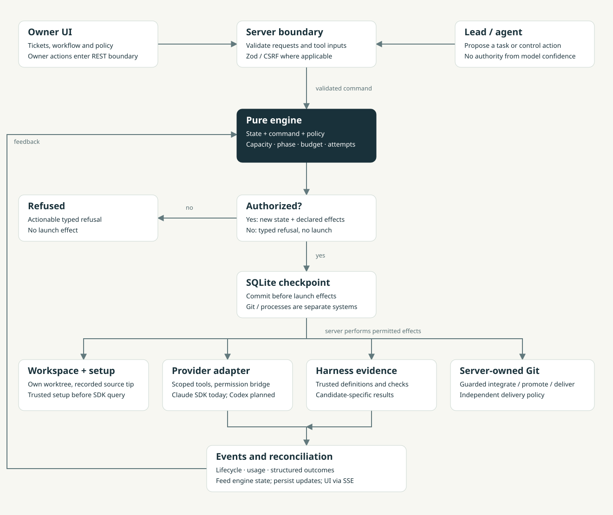

Present in the code
A path exists on this baseline. This does not promise every configuration works or that it is production-proven.
Knowledge transfer Overview
00 / ACP KNOWLEDGE TRANSFER
A practical handover of ACP: engine authorization, ticket execution, conflict recovery, token economics and the path to multiple providers.
ACP turns tickets into scoped agent work with a pure orchestration engine, isolated worktrees, role-specific tools and explicit verification and delivery rules.
Read the architectureTHE FOUR RESPONSIBILITIES
A path exists on this baseline. This does not promise every configuration works or that it is production-proven.
The code supports the concern; its occurrence rate and actual token impact remain unmeasured.
Context retrieval, new provider contracts and richer routing require separately scoped implementation.
Numerical scenarios explain scaling. They are not token-savings benchmarks or provider bills.
Architecture → Ticket flow → Conflict recovery → Token efficiency → Issues → Future providers. The publication chapter covers Pages preparation and a reviewed LinkedIn draft. All content is static; this site cannot launch agents or access live ACP data.
01 / ACP KNOWLEDGE TRANSFER
Authorization is a sequence of deterministic decisions and execution safeguards. A successful model response does not grant a permission.

The engine checks caller, phase, node, capacity, depth, budget and attempts. The server persists before preparing the worktree, setup and SDK launch. An accepted request is not completed work.
Architecture Mermaid source · Helper sequence Mermaid source
start_agent(role, task, helper?).packages/orchestrator/src/commands.ts — applyCommand, createRun, agentEvent
packages/orchestrator/src/policy.ts; draft.ts; lead-tools.tspackages/server/src/control/service.ts — apply, perform, startAgent, launch
packages/adapters/claude-code/src/managed/adapter.ts; permissions.ts;
branch-guard.ts
Source snapshot: dev · df9cf44 · 27 Oct 2026. Code presence is not a production reliability benchmark.
02 / ACP KNOWLEDGE TRANSFER
A workflow configures supported roles and routes. The engine compiles and enforces the program; it is not an arbitrary graph executor.
Ticket key/title, type, priority and description enter the prompt builder. The server adds selected context, stage profile, mapped skills, attachment references and a prior summary of the same ticket where applicable. It does not automatically send the entire repository, all comments or other tickets.
The lead asks for implementation helpers. The engine authorizes them. The server creates worktrees and setup, and the provider adapter starts sessions. Initial planning roles, change reviewers and final stages can be scheduled automatically by engine rules. A helper block is a template; a running helper is one authorized instance.
| Role | Normal work | Boundary |
|---|---|---|
| Planner | Read and propose a plan | No editing, shell or helpers |
| Lead | Coordinate, inspect, request integration | Read-only filesystem role |
| Helper | Implement a scoped task | Own worktree; no branch/history authority |
| Reviewer | Inspect and report findings | Read-only; review is not an executable check |
| Tester | Add/extend tests for the combined behavior | Its changes are reviewed and integrated |
| Resolver | Repair merge content | Dedicated operation, no child helpers; server concludes Git merge |
ACP seals editing work and follows configured change review/check routes. Checks blocks are optional on this baseline; legacy graphs retain their existing gates. A missing check gate is not a passing test result. Agent blocks can select model and effort; a profile narrows role tools rather than granting new authority.
Final stages inspect combined work. Later edits need fresh evidence, rather than assuming an earlier completed reviewer/tester covers a new candidate. Finish presents local merge or PR delivery. A run ending or a discard does not by itself establish accepted delivery.
packages/server/src/board/service.ts — startTicket, runBasepackages/orchestrator/src/plan.ts; loop.ts; stages.tspackages/core/src/workspace/graph/validate.ts; compile.tsADR-0023; ADR-0026; ADR-0027; ADR-0028Source snapshot: dev · df9cf44 · 27 Oct 2026. Code presence is not a production reliability benchmark.
03 / ACP KNOWLEDGE TRANSFER
Conflict recovery is implemented on this development baseline. Resolution, verification, review and delivery have separate statuses and policy decisions.
A clean merge needs no resolver model call. For a conflict, ACP prepares a worktree with the merge in progress. The resolver edits content, reports its outcome/assessment, and the server seals and validates the candidate. Attempts are bounded across replacements: 1–3, default 2.
| Condition | Current behavior |
|---|---|
| Adaptive prose in approved scopes | May skip normal checks; always-run checks still apply |
| Runtime, configuration, MDX or uncertainty | Agent confidence or a small diff cannot create a prose skip |
| Missing checks | Unavailable, or explicit unverified policy; configured escalation/draft route |
| Candidate / target / policy changed | Evidence stale; promotion rechecks freshness |
| Delivery not delegated / target not allowed | Retain owner delivery |
| Delegated push/PR | Push and open/update PR; draft when the route requires it |
| Delegated merge | Local fast-forward where applicable; existing PR follows the PR path |
packages/server/src/control/conflict-resolution.tspackages/core/src/workspace/conflict-resolution.ts — decideVerification
packages/orchestrator/src/resolution.ts; report-tool.ts; step-attempts.ts
docs/conflict-resolution/STATUS.md; ADR-0030 (file still marked proposed)
Source snapshot: dev · df9cf44 · 27 Oct 2026. Code presence is not a production reliability benchmark.
04 / ACP KNOWLEDGE TRANSFER
Understand the issue first: separate ticket agents can search and read the same code again. Then see the proposed fixes, current safeguards and illustrative numbers.
Imagine a large application with authentication, billing, notifications and shared libraries. Ticket A asks an agent to fix a login error. Before editing, it must locate the login route, follow the authentication service, understand shared validation and find the tests. Those reads are useful work: the agent needs evidence to make a correct change.
Ticket B later asks for another login change. It starts a separate run. ACP does not currently provide an automatic, project-wide memory of everything Ticket A discovered. The new lead and helpers may repeat searches and read the same route, service and tests. A reviewer may also inspect them independently. More tickets and more roles create more opportunities to repeat the same discovery.
This does not mean ACP automatically sends the entire repository to every agent. The model sees the context supplied to it and the results of tools it uses. An agent with an unclear brief may explore many folders or read large files; a focused agent may need only a few relevant modules. The risk is repeated broad exploration, not a guaranteed full-repository scan.
TICKET A / FIRST LOGIN CHANGE
Locate the login route → read authentication and validation → find tests → implement.
TICKET B / ANOTHER LOGIN CHANGE
A separate run may repeat the same searches and file reads before its own implementation.
A file exists on disk without consuming model tokens. When an agent reads it through a tool, the returned text becomes input for a later model request. Search results, instructions, the task, relevant conversation history and the requested answer also contribute. Long tool results can remain in context for subsequent requests, subject to the provider and transport’s context management.
If another session reads that file again, its returned text can enter another model request. That is a new opportunity for input consumption even though the source file did not change. A matching provider prompt cache may reduce repeated processing or price, but an unchanged file alone does not guarantee a cache hit. Fresh sessions do not imply either zero reuse or fully shared memory.
Consider four sessions: the lead, two helpers and a reviewer. In the illustrative comparison below, discovery uses 15,000 tokens per session, or 60,000 across four. If focused context reduces discovery to 5,000 per session, that becomes 20,000. With 30,000 other tokens unchanged, the example moves from 90,000 to 50,000. These are assumptions to explain the mechanism, not measured ACP savings or a dollar bill.
Changing three lines may require understanding callers, permissions, data contracts and tests across several packages. Codebase size increases the search space; change size does not reliably predict discovery cost. Adding helpers can shorten elapsed time while increasing total reading, handoff, review and rework. Worktrees isolate edits; they do not automatically share what each agent learned.
The waste to reduce is avoidable rediscovery or irrelevant input. Re-reading current source to validate an assumption, checking a changed dependency and independently reviewing a security-sensitive edit can be necessary. Optimizing by forbidding those reads could save input while increasing incorrect changes and later repairs.
These are proposed improvements, not an implemented project-memory service. Start with a small, source-backed project map: module responsibilities, entry points, important dependencies, invariants and where trusted tests are defined. Reuse that map across tickets only while its references remain valid. Do not generate a full repository summary separately for every helper.
For the login example, a ticket brief should name the relevant route, authentication service, shared validator and tests, explain the requested behavior, and identify what is still uncertain. The lead hands a helper the findings and source references it already has. The helper verifies those references in its own checkout and expands its search whenever the task requires it.
Keep shared essentials small and tailor additional context to the role. A documentation helper does not automatically need the billing implementation. A reviewer still receives the current diff, acceptance criteria and relevant checks, and retains enough independence to find mistakes rather than merely accepting the implementer’s account.
Key reusable source facts to the project and source snapshot; use file content hashes and invalidate affected entries after changes. Concurrent tickets can be based on different commits, so a correct map for Ticket A may already be stale for Ticket B. Source facts remain data, never permission grants. New persistent knowledge needs an explicit trust and retention design; do not store conversations or tool output as memory.
Measure net benefit per correctly accepted ticket: model input/output and cache categories, discovery overhead where reliably attributable, preparation and refresh work, retries, reviews, latency and regressions. Do not claim a saving if maintaining the map or fixing missed context costs more than the reading it avoided.
Implemented: bounded initial context of up to 10 files / 32 KiB, assembled once per run and passed to its agents; same-ticket summaries; helper-session continuation for rework when available; structured outcomes and attempt limits; role/node model and effort settings. These mechanisms help within the current design, but do not establish a cross-ticket memory or a provider cache hit.
Proposed: a reusable project map with freshness checks, task-specific retrieval and structured source handoffs, plus evaluation of their net benefit. The existing 32 KiB bound is a byte limit on initial context, not a total token cap or a limit on later file reads. The issue cards below pair each additional risk with its proposed control.
Historical fixes are labeled. Other mechanisms identify potential waste, not measured frequency or savings.
Issue / consequence: Each ticket rediscovers layout, entry points and conventions. Cost grows with tickets and agents, not only repository size.
Evidence / status: Observed fresh-session mechanism; actual repeated reads unmeasured.
Proposed fix / control: Small versioned project map; task-relevant retrieval.
Issue / consequence: Several roles independently investigate the same question because handoff contains little evidence.
Evidence / status: Observed separate roles and helper briefs; overlap unmeasured.
Proposed fix / control: Structured handoff with findings, source references, assumptions and acceptance criteria. Preserve independent review where required.
Issue / consequence: Large generic context, profiles or skills are supplied even when irrelevant.
Evidence / status: Observed shared run context/profile assembly; actual bloat unmeasured.
Proposed fix / control: Shared essentials plus role/task-specific references; hard size caps and explicit truncation.
Issue / consequence: Dumps of whole files, generated assets, lockfiles or long search output fill subsequent rounds.
Evidence / status: Future risk; current byte cap does not bound tool exploration.
Proposed fix / control: Search filenames/symbols first, bounded excerpts, exclusions and expandable results.
Issue / consequence: More messages and tool results increase input on later rounds; a long-lived agent becomes expensive to continue.
Evidence / status: General session risk; not profiled locally.
Proposed fix / control: Bounded milestones, concise handoffs, provider-supported compaction when validated.
Issue / consequence: Changing earlier instructions, tool ordering, models or reference text prevents reusable prefixes. A run-local text cache is mistaken for provider caching.
Evidence / status: Provider documentation; actual SDK cache hits require reported usage.
Proposed fix / control: Stable useful prefixes; measure actual cache categories; do not add padding just to reach thresholds.
Issue / consequence: Many tiny helpers each pay startup, discovery, reporting and review overhead.
Evidence / status: Observed launch model; optimal task size unmeasured.
Proposed fix / control: Compare coordination overhead with independent work; combine related edits under one capable helper.
Issue / consequence: Helpers/tickets touch shared modules or depend on unmerged changes, causing conflicts and repeated fixes.
Evidence / status: Observed isolated branch semantics; historical supplied screenshot case.
Proposed fix / control: Dependency-aware scheduling, declared likely file scopes, shared-file hotspots, bounded conflict recovery. Scope estimates are advisory.
Issue / consequence: A helper is asked to perform an unsupported operation; replacement starts can repeat it.
Evidence / status: Historical screenshot case. Current conflict operations, structured outcomes and no-change attempt bounds mitigate this loop.
Proposed fix / control: Use the supported server operation; retain capability-aware briefs and progress measurements.
Issue / consequence: The next attempt repeats the same strategy without new evidence.
Evidence / status: Current step/operation bounds cover no-change and failed outcomes; bounds do not prove each remaining attempt is useful.
Proposed fix / control: Use stable step identity and structured reasons; change strategy or stop within configured policy.
Issue / consequence: Useful findings can still be omitted from a task or ignored by the recipient.
Evidence / status: The earlier no-change reporting gap is fixed by reportedOutcome and noChangeLine. Cross-ticket knowledge reuse is still proposed.
Proposed fix / control: Keep structured handoffs, source pointers and outcome coverage; do not label the old gap open.
Issue / consequence: Repeated malformed calls, unknown targets or status checks consume model rounds without progress.
Evidence / status: Future risk; status tools exist, frequency unmeasured.
Proposed fix / control: Clear schemas/capabilities, actionable refusals, event-driven completion where possible.
Issue / consequence: Change reviewers, final reviewers and testers repeat identical analysis without a distinct acceptance goal.
Evidence / status: Configurable review/stage mechanism; duplication unmeasured.
Proposed fix / control: Assign review purpose and scope; retain independent checks required by policy.
Issue / consequence: Same commit/check is rerun, or huge logs are repeatedly read by LLMs. Test execution itself is compute, not necessarily model-token usage.
Evidence / status: Commit-specific gating exists; waste frequency unmeasured.
Proposed fix / control: Trusted evidence reuse only when commit, check definition, environment and policy match; bounded failure summaries.
Issue / consequence: Missing environment, unclear failure or flaky tests trigger speculative edits and repeated runs.
Evidence / status: Future risk; setup failure already blocks SDK startup.
Proposed fix / control: Distinguish setup/product/flaky/unknown failures; provide reproducible command IDs and bounded diagnostics.
Issue / consequence: Cached architecture notes survive renames, branch changes or dependency updates, causing wrong edits and repair.
Evidence / status: Future risk for shared knowledge; context currently comes from owner checkout.
Proposed fix / control: Commit/content-hash provenance, dependency invalidation, freshness checks against the agent's checkout.
Issue / consequence: Relevant callers, invariants or tests are omitted; short prompts save input but cause more incorrect work.
Evidence / status: Future risk.
Proposed fix / control: Retrieval coverage checks, source pointers, uncertainty and on-demand expansion.
Issue / consequence: A costly model handles mechanical work, or a weaker configuration needs many failed attempts on hard work.
Evidence / status: Role/profile/project model selection exists; no measured routing policy.
Proposed fix / control: Evaluate outcome-adjusted work by task class; change configuration only under explicit policy.
Issue / consequence: Long plans, repeated summaries and commentary add output and later input without helping execution.
Evidence / status: Short work-note instruction already exists; other verbosity unmeasured.
Proposed fix / control: Bounded structured plans/outcomes; retain required reasoning evidence without storing chain of thought.
Issue / consequence: Per-agent limits still allow many concurrent tickets, replacements and repeated runs to spend heavily in aggregate.
Evidence / status: Current ADR-0014 budget is per agent.
Proposed fix / control: Proposed project/run aggregate admission and reservation policy with explicit unknown usage and overshoot. No silent change to existing accounting.
Issue / consequence: Launching another agent after an uncertain result duplicates work or abandons useful session state.
Evidence / status: Restart recovery exists; provider/transport ambiguity remains a design concern.
Proposed fix / control: Idempotent operations, reconciliation before retry and explicit resumability capability.
Issue / consequence: Inclusive cached input, reasoning already included in output, or cumulative totals are summed again. A cheaper-looking provider may simply report less.
Evidence / status: Future Codex integration risk; existing ACP has strict accounting rules.
Proposed fix / control: Versioned provider mappings, fixtures and provenance; no invented zeros or double counting.
Issue / consequence: A scout rescans the whole monorepo or regenerates summaries for every small change.
Evidence / status: Future risk of the proposed optimization itself.
Proposed fix / control: Deterministic metadata first, incremental invalidation, capped refreshes and measured net benefit.
Issue / consequence: Reused material includes another project's data or repository text is promoted to policy.
Evidence / status: Future risk; existing local-only and prompt-injection boundaries apply.
Proposed fix / control: Project isolation, allowlisted paths, origin/provenance, treat retrieved text as data and keep permissions outside model control.
01 / ESSENTIALS
Owner-approved boundaries, invariants and trusted check IDs. Keep it concise.
02 / REFERENCES
Local paths, symbols and dependencies. Validate content hashes and source snapshot.
03 / TASK
Goal, acceptance criteria, likely sources, tests and uncertainty. Allow expansion.
04 / EVIDENCE
Diff, checks and review bound to the relevant commits and policy.
Start with maintained docs and local file/symbol search. Do not add a mandatory research agent or external vector service before measuring net benefit. One permanent project conversation can accumulate irrelevant history, stale assumptions and mixed permissions.
Keep source facts separate from authority; invalidate affected knowledge and dependents after changes. Do not persist conversations, tool I/O or hidden reasoning as project memory.
| Historical helper card | Displayed budget tokens |
|---|---|
| First Git-sync helper | 5,836 |
| Second Git-sync helper | 6,847 |
| Third Git-sync helper | 8,297 |
| Total displayed | 20,980 |
The earlier conflict remained unresolved. Some investigation was useful, so the entire subtotal is not proven waste. Current recovery, outcome and retry-bound code mitigates the historical loop. Do not combine counters from screenshots taken at different moments.
| Work | Repeated discovery | Focused context |
|---|---|---|
| Discovery per session | 15,000 | 5,000 |
| Discovery across four sessions | 60,000 | 20,000 |
| Other work, assumed equal | 30,000 | 30,000 |
| Total | 90,000 | 50,000 |
Assumed difference: 40,000 tokens, about 44%. This arithmetic is not measured ACP savings. It assumes focused context reduces discovery while acceptance quality and other work stay equal.
| Twenty comparable tickets | Hypothetical budget tokens |
|---|---|
| 20 × 90,000 baseline | 1,800,000 |
| 20 × 50,000 focused execution | 1,000,000 |
| One-time project map | 8,000 |
| Focused total with preparation | 1,008,000 |
| Illustrative difference | 792,000 |
Real evaluation must include refreshes, retrieval, failures and repairs. A map regenerated for every helper, or stale guidance that causes wrong edits, can erase the benefit.
| Approach | Implementation | Coordination | Rework | Total |
|---|---|---|---|---|
| Two scoped helpers | 30,000 | 10,000 | 0 | 40,000 |
| Six overlapping helpers | 30,000 | 30,000 | 20,000 | 80,000 |
Six instances need not run simultaneously. Parallel work can finish sooner while consuming more total tokens.
Budget tokens = uncached input + cache creation + output. Cache reads are tracked separately and excluded from the cap. Default: 500,000 per agent, configurable and soft. Three agents reaching that allowance account for 1,500,000 before possible overshoot—not an observed bill. Follow-up allowance resets per question.
Initial shared context allows 10 files / 32 KiB. That does not cap later tool reads or history, and reading context once per run does not prove a provider cache hit.
Track acceptance evidence, regressions/reopenings, owner interruptions, latency, reported usage coverage and retries. Include map maintenance, retrieval, reviews and repairs. Test compute time is separate from LLM tokens. Exact discovery-token attribution is not established; do not invent it from timestamps.
docs/decisions/0014-orchestration-budget-metric.mdpackages/core/src/orchestration/limits.ts — budgetTokenspackages/server/src/harness/context.ts; control/service.ts — setupFor,
withTicketSummary
packages/orchestrator/src/budget.ts; follow-up.tsProvider primary references are listed in Evidence. Cache behavior is
model/transport dependent.
Source snapshot: dev · df9cf44 · 27 Oct 2026. Code presence is not a production reliability benchmark.
05 / ACP KNOWLEDGE TRANSFER
This is a bounded code review, not production incident statistics. Each issue names its mechanism, possible impact, proposed control and source.
| Earlier gap | Current mitigation |
|---|---|
| No repair route through helper Git restrictions | Server-owned isolated conflict operation and content-only resolver |
| Lead cannot see no-change reason | Structured reportedOutcome and noChangeLine |
| No-change replacements escape attempt bounds | Step accounting includes no-changes; resolver operation has its own bounds |
| Owner-only waits consume working deadline | Current isRunOverdue subtracts tracked owner wait |
Confirmed mechanism:The first rejected setup read is caught and replaced with NO_SETUP; its promise remains cached in live.setup. Later agents in that live run reuse the empty setup instead of retrying the read.
Possible consequence:If context loading fails before a lead and four helpers start, all five can lack the intended guidance. Actual extra discovery tokens are unknown.
Proposed control:Show degraded context explicitly; consider a bounded retry before later launches while preserving a coherent context version.
Source:packages/server/src/control/service.ts — setupFor.
Confirmed mechanism:Context is read from the owner checkout and reused per run; editing agents work in ticket-based worktrees. That launch path does not bind context file hashes to each helper base commit.
Possible consequence:A ticket still using the old directory layout may receive guidance from an owner checkout with a newer layout. The mismatch can cause wrong searches or rework.
Proposed control:Keep trusted owner policy separate from source facts. Attach source hashes/commit provenance and validate source references against the agent checkout.
Source:packages/server/src/board/harness.ts — agentSetup; control/service.ts — startAgent, setupFor.
Confirmed mechanism:The adapter queue explicitly describes itself as unbounded. Messages sent while a worker starts also accumulate in an array. Existing message validation does not impose a total queue bound here.
Possible consequence:A burst can create a backlog of stale or repetitive requests. Queued input may cause extra turns if consumed; queued events create memory/backpressure risk rather than directly generating tokens.
Proposed control:Bound queue count/bytes; expose backpressure and per-message state. Coalesce only explicitly replaceable updates, never silently drop task instructions.
Source:packages/adapters/claude-code/src/managed/queue.ts — AsyncQueue; server/src/control/service.ts — pendingSends, sendTo.
Confirmed mechanism:The engine returns success after emitting send-to-agent. Missing handles and rejected sends are logged later; that reply does not acknowledge consumption or reading.
Possible consequence:The coordinator may wait, poll or repeat an instruction that never arrived. Race frequency and extra tokens have not been measured.
Proposed control:Track accepted, queued, delivered-to-handle and failed states. Do not claim read acknowledgment without provider evidence.
Source:packages/orchestrator/src/lead-tools.ts — message_agent; server/src/control/service.ts — sendTo.
Confirmed mechanism:Each ended-lead follow-up starts with EMPTY_LEDGER and zero turn usage, using the run per-agent limit. The budget is enforced per follow-up turn, not as a cumulative conversation allowance.
Possible consequence:Illustrative ceiling: ten follow-ups at the default 500,000-token allowance permit 5,000,000 budget tokens before considering soft-cap overshoot. This is permission to spend, not actual consumption.
Proposed control:Keep per-turn protection; propose a separate cumulative follow-up/project allowance and show remaining scope. Preserve accounting and explicit owner policy.
Source:packages/orchestrator/src/follow-up.ts — followUpChat, followUpBudgetTokens, followUpEvent.
Confirmed mechanism:The full lead view_change reply is capped at 32 KiB. The tool takes an agent ID, with no file/range cursor. Repeating it without a source change cannot page through the rest.
Possible consequence:A large refactor can require repeated file discovery because later portions do not fit. The cap is intentional protection, not evidence that increasing it is the right fix.
Proposed control:Offer a file manifest and bounded per-file/range inspection with explicit coverage/truncation. Keep a total inspection budget.
Source:packages/orchestrator/src/loop.ts — viewChangeReply; server/src/control/service.ts — leadTool(view_change).
Confirmed mechanism:Checks share a server-wide serial runner. The working-state timeout defaults to two hours. The current isRunOverdue path subtracts owner-only wait time; no dedicated harness-queue subtraction is apparent in this path. Review/plan-owner-wait states have their own handling.
Possible consequence:Hypothetically, six ten-minute check jobs ahead create about one hour of waiting. Whether it times out a run depends on its state and remaining deadline. Waiting alone generates no model tokens; duplicate retries can.
Proposed control:Expose queued versus active work, avoid duplicate in-flight checks, and design resource/deadline policy deliberately. Preserve required checks and isolation.
Source:packages/server/src/harness/runner.ts — queue; packages/server/src/control/service.ts — sweep; packages/orchestrator/src/commands.ts — isRunOverdue.
packages/server/src/control/service.ts — setupFor, sendTo, sweeppackages/adapters/claude-code/src/managed/queue.ts — AsyncQueuepackages/orchestrator/src/follow-up.ts; loop.ts — viewChangeReply; stages.ts —
nextStage
packages/server/src/harness/runner.ts — shared setup/check queuedocs/decisions/0030-conflict-resolution-and-delegated-delivery.md;
docs/conflict-resolution/STATUS.md
Source snapshot: dev · df9cf44 · 27 Oct 2026. Code presence is not a production reliability benchmark.
06 / ACP KNOWLEDGE TRANSFER
A model selection and a coding-agent integration are different things. Each provider needs explicit lifecycle, tools, permissions and usage semantics.
| Integration | Status | Next requirement |
|---|---|---|
| Claude Code | Implemented managed provider | Preserve role isolation and conformance |
| Codex | Phase 6 planned | Validate supported app-server transport/version and contracts |
| Other models | Within a supported, validated provider configuration | Check availability, effort support and acceptance quality |
Keep logical task identity, workflow policy, context selection, retry limits and evidence in ACP. Translate them to each provider’s supported API or process. Do not pass a Claude session identifier to Codex or imply conversation/cache reuse across providers.
Start, stream, interrupt, cancel, recover and resume with tested semantics. Enforce role tools, own-worktree writes, server-owned Git and unsupported-capability refusals.
Establish stable dedup identity, per-call vs cumulative reports, cached-input inclusion and reasoning inclusion. Missing fields stay unavailable; no invented zeros or double counting.
Current model precedence is node → profile → project → provider default. Effort is a separate workflow setting; support depends on the chosen provider/model. No new adapter, model recommendation service or future-phase feature is implemented in this documentation package.
docs/roadmap.md — Phase 6 Codex adapter, Phase 5 Harness Lab, Phase 7
research
packages/core/src/adapters/managed.tspackages/server/src/control/service.ts — resolveAgentModel, launch
packages/adapters/claude-code/src/managed/adapter.ts — buildOptions
ADR-0013; ADR-0014; ADR-0028Source snapshot: dev · df9cf44 · 27 Oct 2026. Code presence is not a production reliability benchmark.
07 / ACP KNOWLEDGE TRANSFER
Use the pinned baseline and explicit claim labels. A design document is not proof of implementation, and code presence is not a measured reliability result.
dev / df9cf44f713e11c62add3786e6026aaee8022495, reviewed 27 Oct 2026.
Package version 0.3.1. The snapshot includes conflict-recovery code, while ADR-0030
remains marked proposed and CR rows remain review. Maintainers should reconcile that
wording separately.
| Question | Repository source |
|---|---|
| Ticket handoff | server/src/board/service.ts; orchestrator/src/plan.ts |
| Authorization and scheduling | orchestrator/src/commands.ts, policy.ts, draft.ts, loop.ts |
| Provider execution | server/src/control/service.ts; adapters/claude-code/src/managed/adapter.ts |
| Safety | managed/permissions.ts, branch-guard.ts; server/src/workspace/manager.ts |
| Conflict policy | core/src/workspace/conflict-resolution.ts; server/src/control/conflict-resolution.ts |
| Usage | docs/usage-accounting.md; ADR-0014; orchestrator/src/budget.ts |
No private provider transcript scan, production token study or comprehensive security audit was performed. Historical figures were transcribed from supplied screenshots; examples are hypothetical. Exact prices, model capacity and provider availability are deliberately not pinned.
The site makes no ACP API calls, uses no analytics, remote assets or browser storage, and contains no live inventory or credentials. Citations load only when clicked. Repository code links may require access to the private source; this guide does not require it.
02 / ACP KNOWLEDGE TRANSFER
The engine decides which transitions and effects are allowed. The server performs the work and returns events to the engine.
Maintains run state, checks the workflow and policies, enforces capacity and budgets, and declares permitted effects. It is pure logic: it does not launch processes or perform Git operations.
Persists accepted transitions, prepares worktrees, runs configured setup and checks, starts agents through the provider adapter, and feeds their events back to the engine.
start_agent.
Depending on the configured workflow, the engine can schedule planning, change reviewers and final stages as their conditions become ready. Conflict resolution uses a separate server-managed operation and resolver helper.
Persisting state before an effect prevents an unrecorded launch when that database commit fails. It does not make SQLite, Git, the agent process and GitHub one atomic transaction; failures and restarts require reconciliation.
These descriptions are based on the guide’s pinned development snapshot. See Architecture & authority for the diagram and Ticket & workflow for configurable routes.